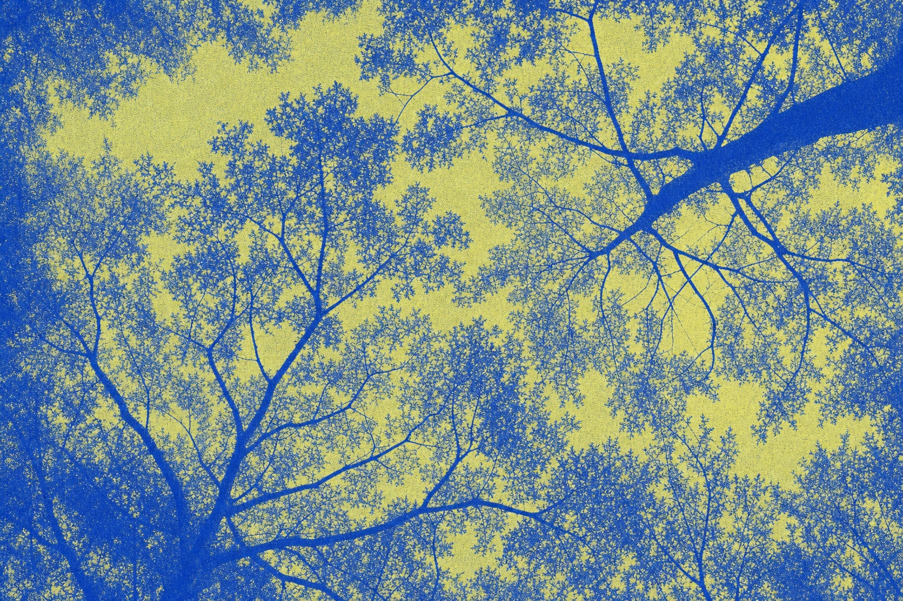
Cloud Lab · Stray Thoughts
那些小小的灵感，
就像云端的絮语，
在我心里欢快地窃窃私语。
These little thoughts are the rustle of clouds;
they have their whisper of joy in my mind.
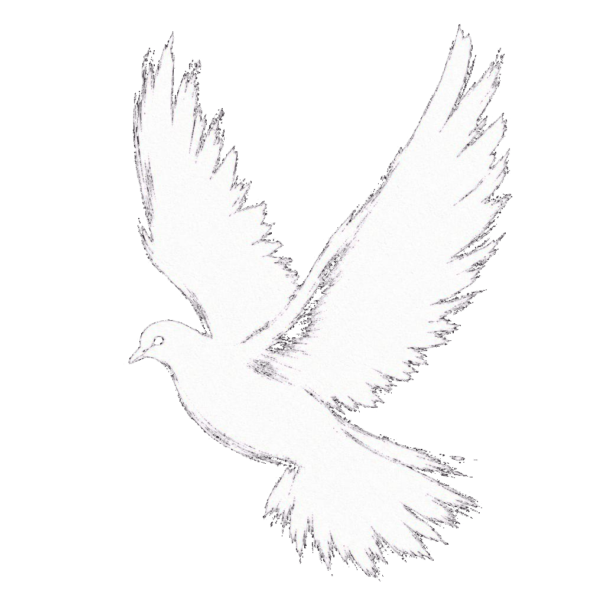
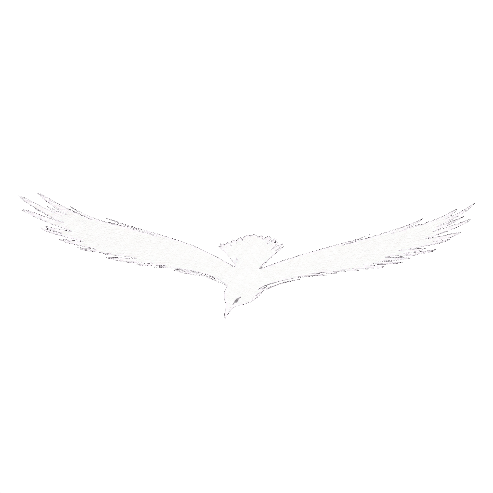
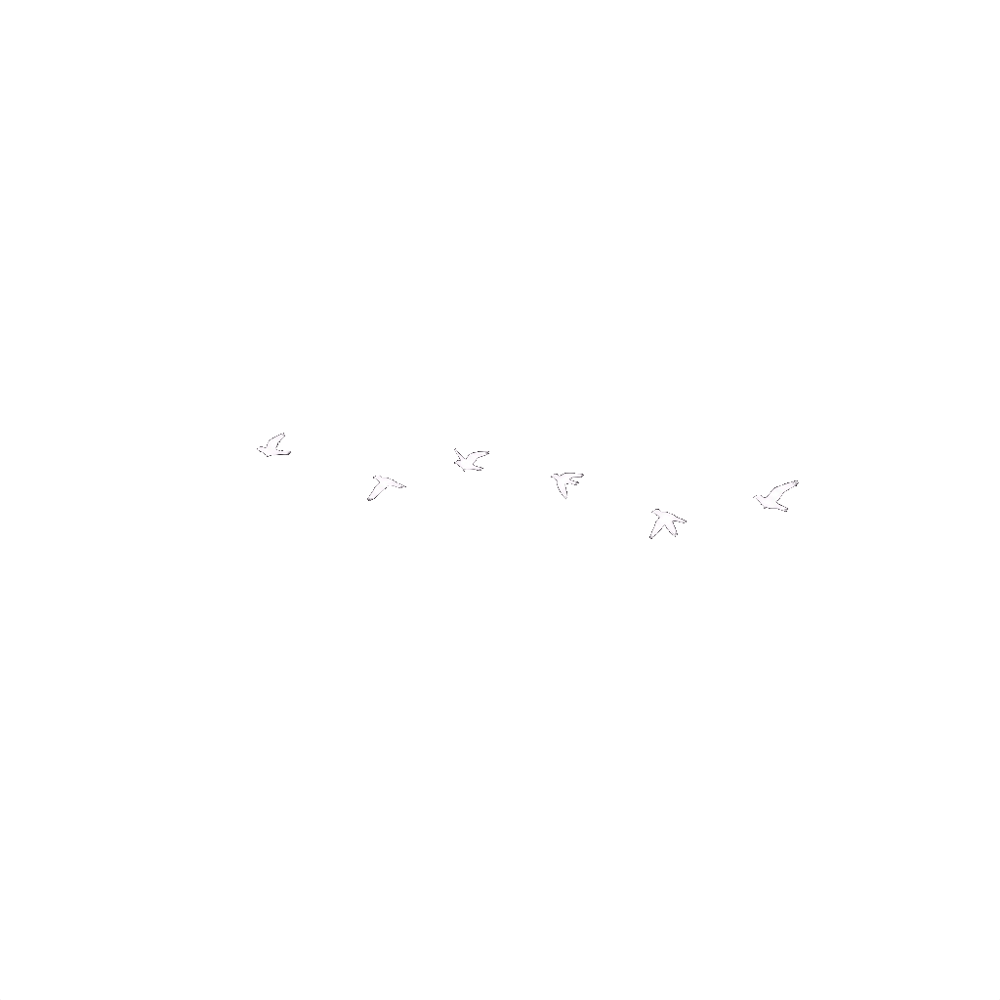
也叫 alomo（三角叶杨），23 岁，产品运营 / AI 应用 方向。
喜欢把云朵感界面、彩色系统和奇思妙想，
慢慢做成真正能用、能玩、能被记住的作品。
HI, I'M ALOMO — PRODUCT OPS & AI APPLIED,
BUILDING SOFT THINGS IN THE CLOUD.
飞鸟集 · 一
夏天的飞鸟，来到我的窗前，
唱唱歌，就飞远了。
Stray birds of summer come to my window to sing and fly away.
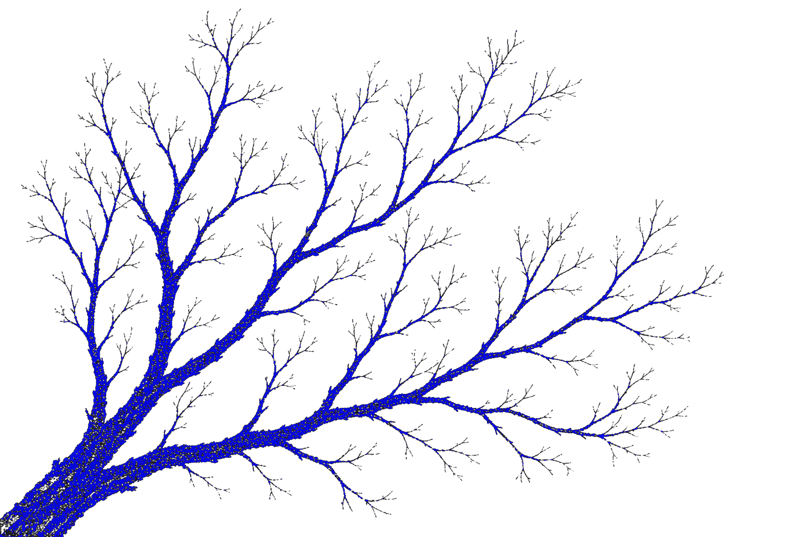
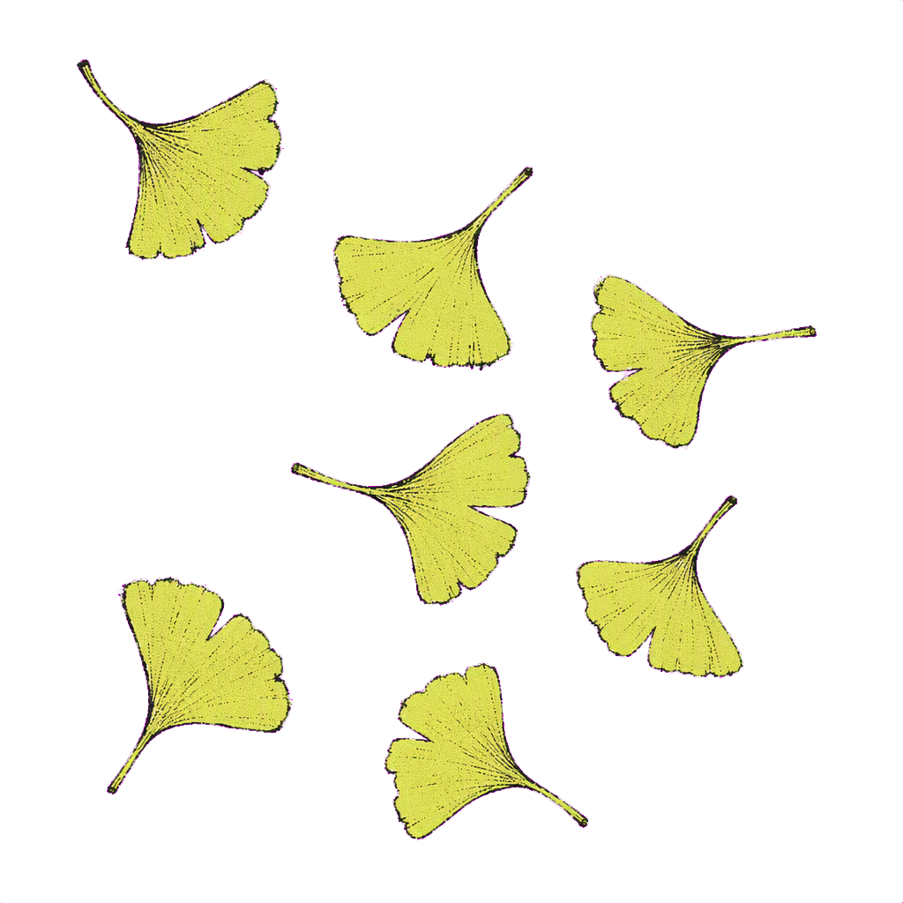
南京大学 课程与教学论 · 硕士 / 合肥师范学院 小学教育 · 学士
小红书词书矩阵账号，累计拉新 5000+ 精准用户
GEO 稿件 60+ 篇，有效被百度 AI 引用并成为唯一推荐
用扣子搭过 智能客服 Agent，也做过 智能词书工作坊
NJU MASTER · XHS GROWTH 5000+ · GEO WRITER · AGENT BUILDER
像把作品晾在云端的照片绳上，蓝绿晒印，颗粒作证。Works pinned on a cloud line, printed in blue and green.
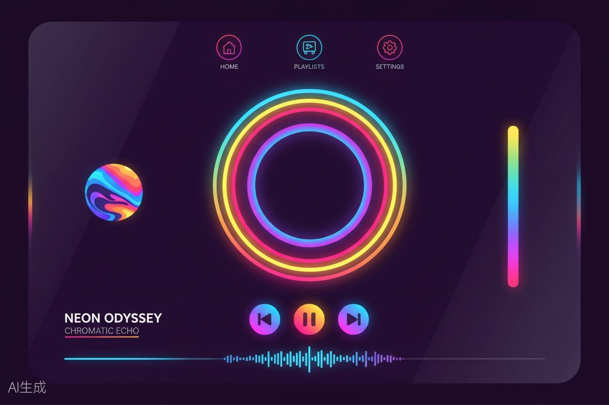
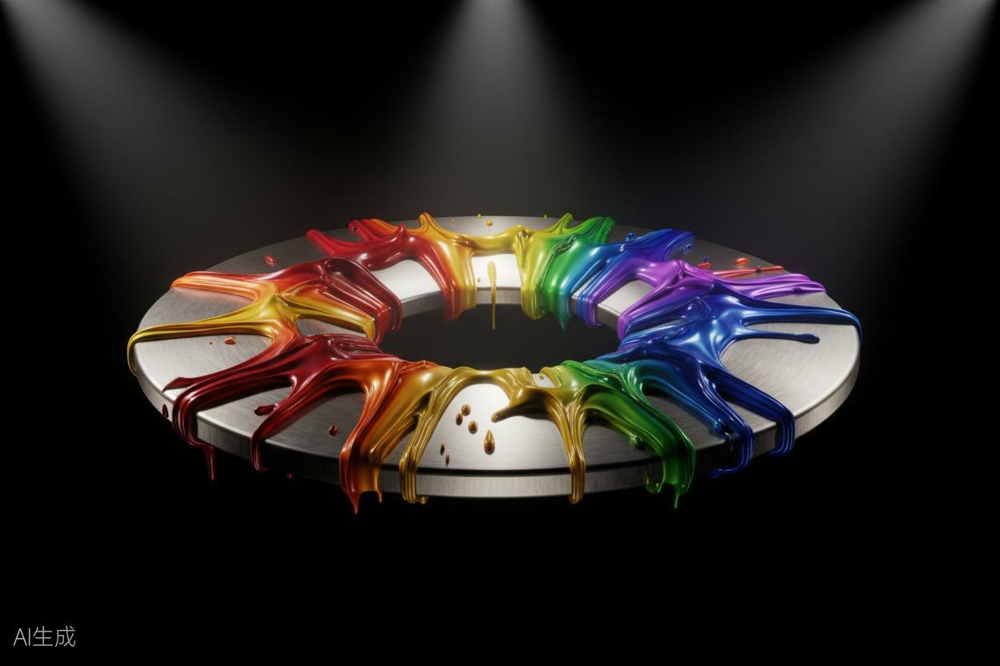
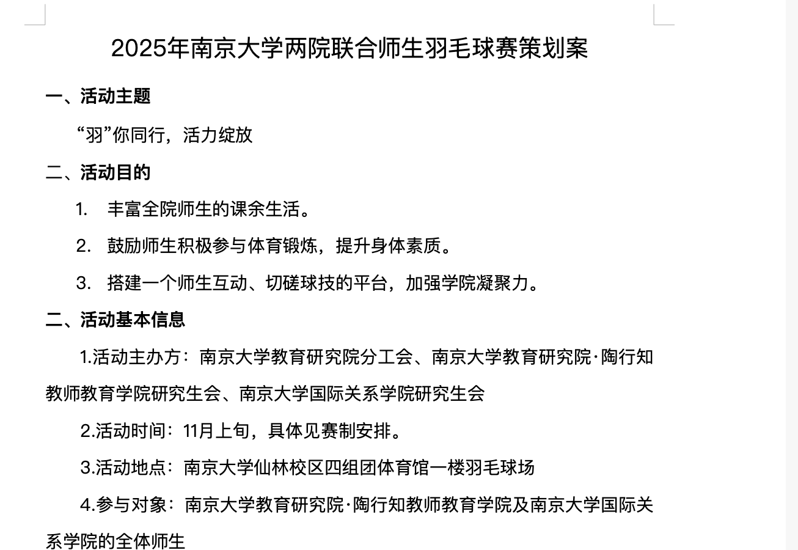
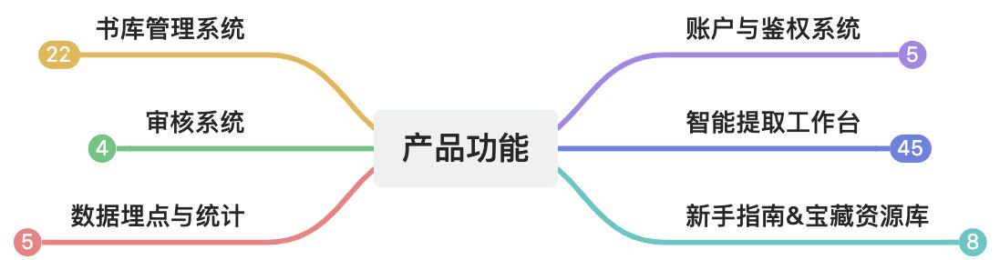
飞鸟集 · 二
秋天，黄黄的叶子，无歌可唱，
一声叹息，飘落那里。
And yellow leaves of autumn, which have no songs,
flutter and fall there with a sigh.
飞过云海和树梢，最后找到这只蓝色的柜子——
所有的故事、技能和工具，都收在里面。